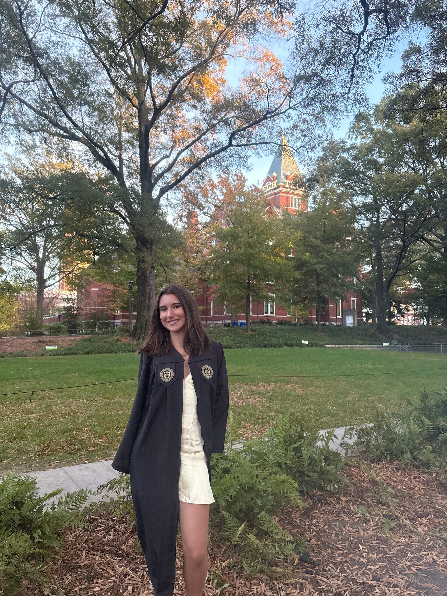

Hi, I’m Daniela
An Atlanta-based UX researcher and designer focused on human-centered systems, studying Computational Media at Georgia Tech.
learn more about me!
About
I’m finishing my B.S. in Computational Media at Georgia Tech in December 2026, and I like turning real feedback into clear, intuitive products.
What I do
- User research: interviews, surveys, usability testing
- UX/UI design: wireframes, prototypes, high-fidelity mockups in Figma
- Data storytelling: turning large sets of feedback into reports people can act on
Skills
- Design: Figma, wireframing, prototyping, information architecture, branding, typography, Adobe Photoshop
- Technical: HTML/CSS, SQL, Python, Java, Qualtrics, data visualization
- Languages: English, Spanish
Also
Since 2020 I’ve been a digital content editor at AVV Trades, designing brand-consistent layouts and editing long-form content for tone and readability.
CV
The short version of my experience.
Experience
- UX/UI Intern, Jacobs (May 2026 to Nov 2026)
- Lead UX Designer, Praying for the Next Generation (Jan 2026 to present)
- Student Researcher, Students as Partners in Education (Jan 2025 to present)
- UX/UI Researcher and Designer, La Moda Local (May 2025 to Aug 2025)
- Digital Content Editor, AVV Trades (2020 to present)
Education
Georgia Institute of Technology, B.S. in Computational Media, expected December 2026